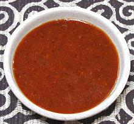

|
Shata - SudaneseSudan - Shata | ||||
| Makes: Effort: Sched: DoAhead: |
1 cup ** 7 min Yes |
Sudanese Shata (one "T") is a hot chili condiment / dip quite different from the Shatta Sauce of Egypt. It is served freshly made in small bowls as a table condiment and dip, appearing at most meals. See Comments. | |||
|
|
1 3 3 1 1 |
c cl T t t |
Lemon Juice Garlic Chili, red (1) Pepper, Black Salt |
Make - (7 min)
|